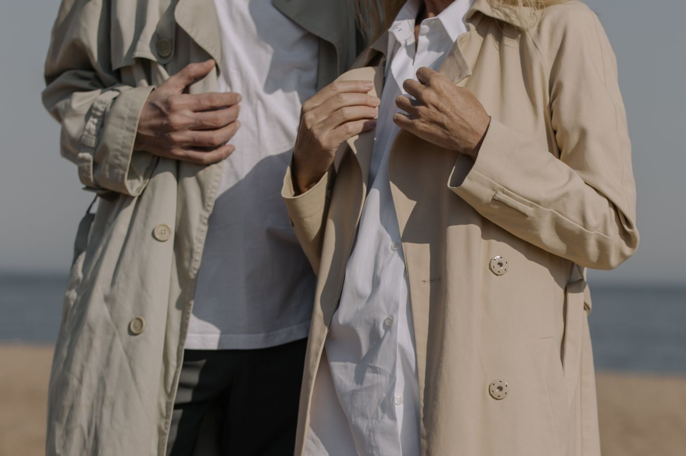
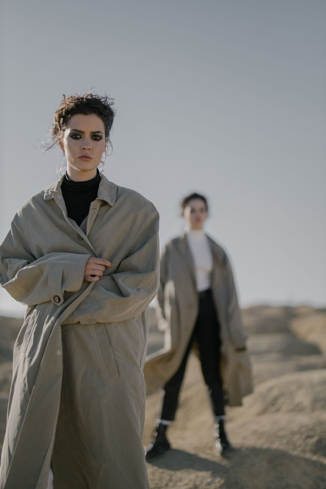
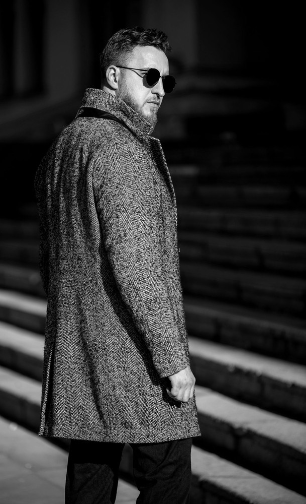
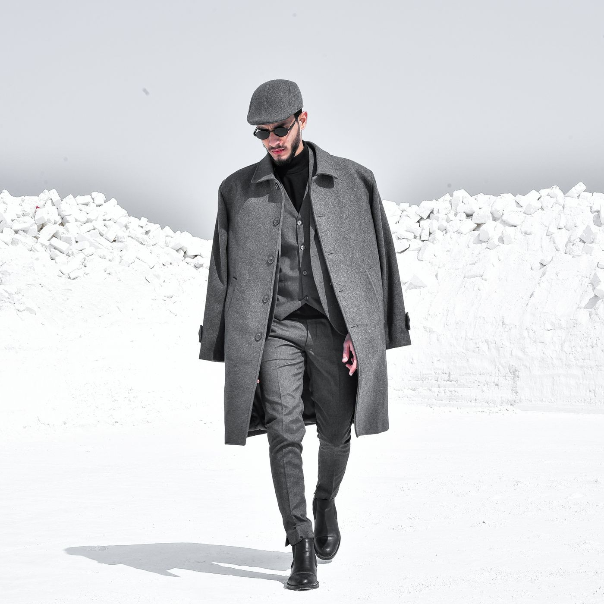
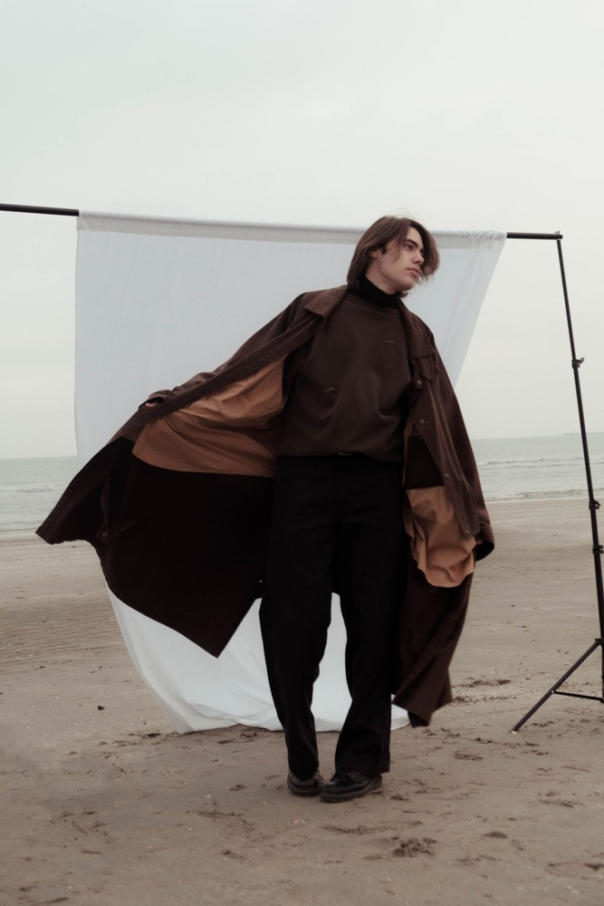
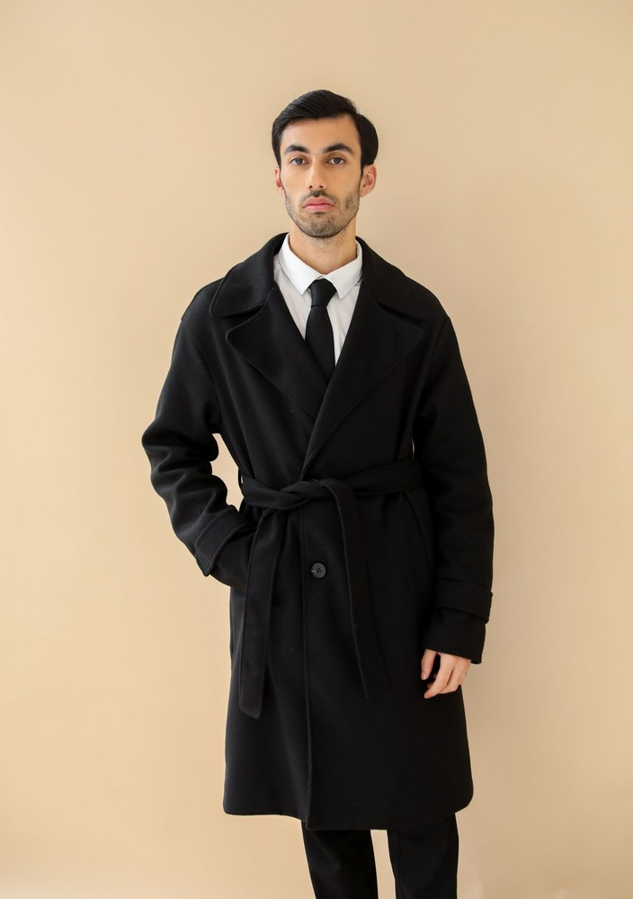

We build overcoats the way armor was once forged for cold winds
Overcoat Prism is an independent Chicago tailoring atelier built on three unwavering disciplines: full floating horsehair canvas chest pieces, unadulterated British and Italian heavy woolens, and individual paper patterns drawn by master cutters.
Born from the bitter chill of Lake Michigan winds
Overcoat Prism was founded in response to the fragile state of modern commercial outerwear. High-street coats and designer labels routinely substitute fusible chemical glues for horsehair canvas, trim warm natural wool with cheap polyester linings, and sell generic sizing that buckles under harsh winter gales.
We established our workshop at One Magnificent Mile to restore authentic architectural tailoring to cold-weather coats. Every bespoke garment we produce features multi-layered horsehair canvas hand-padded across the chest, creating a rolling lapel that breathes with your body and drapes with regal authority.
The name Prism reflects how a well-structured coat refracts the elements: shielding the wearer from freezing precipitation while projecting an unmistakable aura of sartorial refinement and warmth.

Architectural Tailoring by the Numbers

What happens before your coat leaves our cutting table
When you commission an overcoat at our Chicago salon, our master cutter captures thirty-four individual anatomical measurements, noting shoulder slope, posture curvature, and jacket layering clearance. We hand-draft an individual paper pattern unique to your silhouette.
The cloth is sheared by hand using forged steel shears, then joined to a floating canvas composed of Mongolian horsehair, camel wool, and Irish linen. We press each structural seam over curved wooden hams using five-kilogram gravity irons, permanently sculpting shape into three-dimensional wool fibers.
Finally, natural water-buffalo horn buttons are cross-stitched with waxed French silk thread, elevated on thread shanks to ensure effortless buttoning even while wearing heavy winter gloves.
The Three Prism Commitments
Zero Fused Adhesives
We never use synthetic glue to fuse coat fronts. Our full canvas breathes naturally, molds to your torso over time, and will never bubble after dry cleaning.
Ethical Heritage Cloth
All wools, tweeds, and cashmeres originate from historic British and Northern Italian mills with certified animal welfare and environmental sustainability.
Master Cutters, Not Retail Staff
Your fitting is directed by credentialed bespoke cutters who understand balance lines, blade ease, and drape. Phone us, and a tailor answers.
The Mighty Pea Coat & Heavyweight Melton Outerwear
The double-breasted officer pea coat remains one of tailoring's most formidable creations. Originally designed for naval watch officers braving North Atlantic tempests, our version is crafted from 800-gram dense melton wool with broad convertible lapels.
When buttoned against winter blizzards, the high collar seals the throat with a concealed storm latch, while fleece-lined corduroy handwarmer pockets provide instant shelter for the hands. It is an heirloom piece engineered to withstand decades of relentless weather.

Selected Outerwear Classes from the Atelier
The Donegal Field Coat
Pure Irish herringbone tweed with flecks of peat ochre and storm flap throat latch.

The All-Weather Gabardine Trench
High-density long-staple cotton gabardine with removable cashmere button-in warm liner.

The Aviator Shearling Jacket
Vegetable-tanned full-grain lambskin with dense natural shearling collar and brass zip.
Who We Serve
Our Chicago atelier dresses discerning professionals, executives, and sartorial connoisseurs who require outerwear that performs impeccably in urban climates. Leaders who refuse to compromise professional dignity beneath bulky synthetic down parkas. Connoisseurs who recognize that an overcoat is the most visible garment in one's winter wardrobe. And collectors commissioning heirloom garments intended to pass to subsequent generations.
Responsible Sourcing & Longevity
True luxury is inherently sustainable through extreme longevity. Because our coats are built with generous seam inlays and natural unglued canvassing, they can be altered, let out, or taken in throughout the owner's lifetime. A bespoke overcoat from our atelier is designed to serve reliably for thirty years, replacing dozens of short-lived mass-market alternatives.
Commence Your Bespoke Outerwear Journey
Have questions regarding cloth weights, fitting schedules, or private appointments? Visit our salon at 980 N Michigan Avenue, Suite 1600, telephone our tailoring concierge at +1-888-592-3104, or submit your details via our inquiry page. We look forward to crafting your cold-weather armor.
Schedule Your Magnificent Mile Fitting
Private consultations by appointment. Examine cloth bunches, review balance lines, and experience master tailoring.